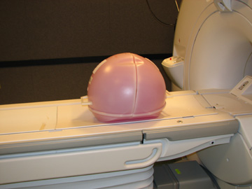
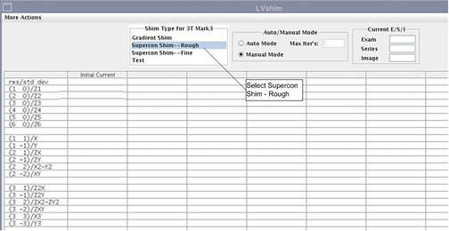
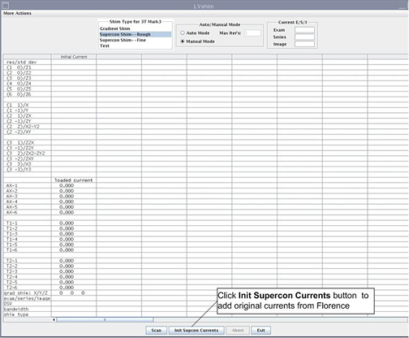
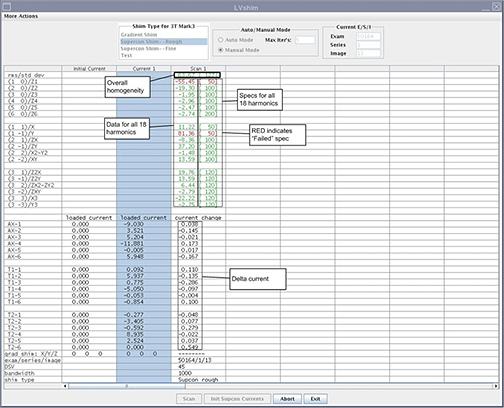
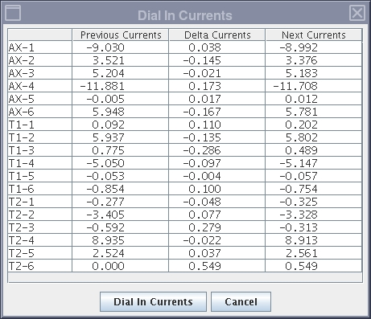
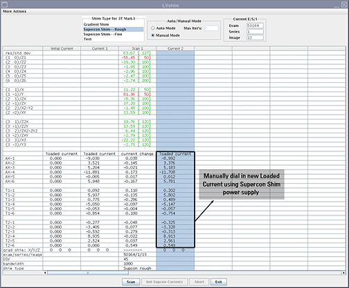
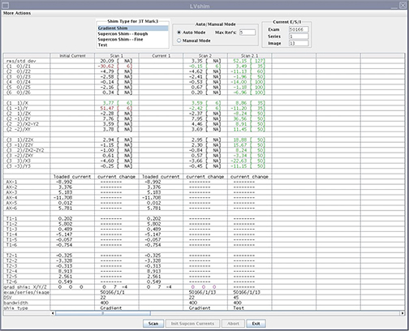
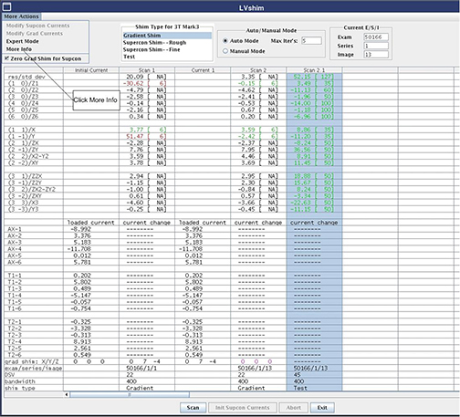

Operating Documentation
Direction 5500113, Rev# 3
Discovery MR750 3.0T Service Methods
Module Version 18.0, Version Date 12/14/09
Operating Documentation |
| Required Persons | Preliminary Reqs | Procedure | Finalization |
|---|---|---|---|
| 2 for magnets with superconductive coils, 1 for magnets with only passive shims | Not Applicable | 4 hours | 10 mins |
There are three different shimming procedures described in this document, in addition to a Test mode to reanlayze existing magnets.
LVShim - Rough (performed at new site installations only):
The objective is to improve the homogeneity to a point where Grafidy and other calibrations can be performed. Use the three-piece LVShim phantom. The Rough LVShim process is performed with the sampling diameter of 45 cm DSV and a bandwidth higher than Fine Shim and Gradient Shim.
Rough LVShim is normally required at new sites that were never shimmed previously. If the site was previously shimmed with LVShim, skip Rough LVShim and begin with Fine LVShim. For a new magnet installation, the magnet ATR shim currents are used for Rough LVShim.
LVShim - Fine
The objective is to further improve and tune the homogeneity as compared to Rough LVShim. Use the three-piece LVShim phantom. The Fine LVShim process is performed with a sampling diameter of 45 cm DSV and a bandwidth lower than Rough Shim.
LVShim - Gradshim
The objective is to perform fine tuning of the homogeneity of the magnet by using gradients only. The Gradshim process is performed with a sampling diameter of 22 cm DSV and the same bandwidth as Fine LVShim, which depends on the quality (good/bad) of the fine tuning. Once the scan passes and all harmonics are within specification, the magnetic field is reanalyzed in Test mode automatically at 45 DSV for customer acceptance.
LVShim - Test
The objective is to analyze completed scans at 45 DSV without calculating currents. This mode performs scan and analyzes the scan in Test mode.
| NOTE: | LVShim - Rough and Fine use the Supercon shim power supply to dial correction currents into supercon correction coils. Gradshim LVShim dials the correction currents into three (X/Y/Z) gradient correction coils. |
| Item | Qty | Effectivity | Part# | Manufacturer | |
|---|---|---|---|---|---|
| LVShim Phantom Assembly | 1 | 3.0T G3 | 2360054 | - | |
| LVShim Phantom Assembly for 450w | 1 | 1.5T | 2298119 | - | |
| ||||
| POISON HAZARD! | ||||
| 1.5T Phantoms CONTAIN NICKEL, A SUSPECT CARCINOGEN. | ||||
| DO NOT INGEST. DISPOSE OF AS A HAZARDOUS WASTE ACCORDING TO STATE AND FEDERAL REGULATIONS. |
| ||||
| POISON HAZARD! | ||||
| 3.0T Phantoms CONTAIN Silicon Oil. | ||||
| DO NOT INGEST. DISPOSE OF AS A HAZARDOUS WASTE ACCORDING TO STATE AND FEDERAL REGULATIONS. |
| Condition | Reference | Effectivity |
|---|---|---|
A phantom centering check scan and center frequency check using manual prescan should be performed prior to starting the LVShim automated tool. This frequency should be saved using Save Frequency while performing the manual prescan. | - | - |
| NOTE: | 3.0T LVShim phantoms have a pink solution; 1.5T phantoms have a green solution. |
Phantom Setup:
Remove all coils from the cradle and phantoms from the bore.
| ||||
| Perform a Localizer scan to ensure the phantom is centered before performing the LVShim. | ||||
Set up and align the LVShim Phantom as shown in Illustration 1 and Illustration 2.
Illustration 1: Aligning LVShim Phantom on Patient Table

Illustration 2: Placing LVShim Phantom on Cradle

Landmark on the LVShim phantom.
Press the [Advance to Scan] button.
Starting the LVShim Tool:
Proprietary Mode - Insert the Restricted Service Key into the host USB, if not already inserted.
Click the Service Browser.
Select the Calibration tab, and click Installation and Calibration to start the wizard.
Select the appropriate shim (Gradient Shim, Supercon Shim-Rough, Supercon Shim-Fine) to be performed from the drop-down list. This will launch the LVShim tool.
Non-Proprietary Mode - On the Service desktop, start the Service Browser if not already running.
Click the Calibration tab shown in Illustration 3.
Illustration 3: Starting LVShim Tool in Service Browser

Select LVShim from the calibration menu and click the link: Click here to start this tool.
The LVShim tool will launch. (Illustration 4 is an overview of the LVShim tool.)
Illustration 4: Overview: Example of Shim Tool

This procedure is required for new sites that were never shimmed. The LVShim setup procedure to perform Supercon Shim - Rough and Supercon Shim - Fine are the same, but the specifications for each mode are different.
After launching the LVShim tool, select Supercon Shim- -Rough. (The Manual Mode option is automatically selected.)
Illustration 5: Starting LVShim Tool User Interface

The LVShim tool scans at different bandwidths and is analyzed at 45 cm DSV.
The bandwidth for Supercon Shim - Rough is 1,000 Hz and automatically selected.
The bandwidth for Supercon Shim - Fine is 400 Hz.
To change the bandwidth, choose Expert Mode. (For a description of Expert Mode features, see Expert Mode Features of LVShim.)
Complete the Rough LVShim explained in Rough LVShim and Fine LVShim Procedure before proceeding.
After launching the LVShim tool, select the appropriate shim type: Supercon Shim- -Rough or Supercon Shim- -Fine. (See Illustration 6.)
Illustration 6: LVShim Tool User Interface

If performing Supercon Shim - Rough for the first time, add original currents from Florence by clicking the [Init Supercon Currents] button shown in Illustration 6.
When a new window displays, enter the original Florence currents one by one in the Modify Currents column, pressing <Enter> after each entry to move to the next line. After the entire column is modified, click the [Dial in Currents] button. (The currents shown in Illustration 7are examples only.)
Illustration 7: Adding Original Florence Currents (Examples)

On the LVShim user interface, click the [Scan] button shown in Illustration 8.
| NOTE: | To abort the scan, click the [Abort] button and press the [Stop Scan] button on the control panel. |
Illustration 8: Starting Scan

After the scan is completed, the tool calculates the harmonics, and compares it with the specifications shown in Illustration 9.
Green cell = Passed spec
Red cell = Failed spec
Illustration 9: Harmonics and Specifications Comparison

The tool calculates the delta currents and the new currents and displays currents in a pop-up window shown in Illustration 10.
Illustration 10: Currents Displayed in Dial In Currents Window

In the LVShim user interface:
If all harmonics data cells are green, decline the new currents by clicking the [Cancel] button.
If any harmonics data cells are red, accept the new currents by clicking the [Dial in Currents] button shown in Illustration 11. The new currents will be displayed in a new column in this window. Dial in the currents from the new Loaded Current column using the Supercon Shim power supply. Refer to Shimming for information about dialing in the currents.
Illustration 11: Second Iteration of LVShim

| NOTE: | The delta currents in the LVShim user interface will change to purple color if the current is not accepted, and the new Loaded Current column does not display. |
Repeat Step 4 through Step 5 for Rough or Fine LVShim until all harmonics are within specification.
Refer to the Magnet documentation for wait times and procedures to dial in currents in the Supercon Coils.
It may also be necessary to go to the Scan desktop to perform Manual Prescan to catch center frequency while dialing in the currents. (See Illustration 12.)
Illustration 12: Example of Supercon Shim - Fine

Click the [Exit] button after all iterations are complete and all harmonics are within specification. If harmonics are not within specification, use Expert mode to scan with different parameters or reanalyze any image with different parameters. (For a description of Expert Mode features, see Expert Mode Features of LVShim.
Perform the Gradify 3 Eddy Current Calibration before proceeding to Gradshim LVShim Procedure, Gradshim LVShim Procedure.
| NOTE: | If harmonics are not converging, use Expert Mode to scan with different parameters or reanalyze any image with different parameters. For a description of Expert Mode features, see Expert Mode Features of LVShim. |
By default, Gradshim is performed in Auto mode, though Manual mode is also available.
In Auto mode, gradient currents are automatically calculated after the [Scan] button is clicked to fine tune the homogeneity of the magnet. In this mode, the tool stops after the X, Y and Z harmonics are within specification. In Test mode, the image from the last scan is automatically reanalyzed. (See Illustration 13.)
Illustration 13: Gradient Shim

After completing the steps defined in Common to All Shimming Procedures, select Gradient Shim.
Click [Scan] shown in Illustration 14.
Illustration 14: LVShim Tool User Interface

In Auto mode, the tool does the following:
Sets up the protocol and collects image data
Calculates the harmonics and compares it with the specification
Calculates the delta currents and the new currents based on the harmonics
Completes multiple iterations (maximum = 5) until harmonics meets the specification
Shows the reanalysis of the last iteration in the final column in Test mode (customer acceptance specification)
After completing the steps defined in Common to All Shimming Procedures, select Gradient Shim and Manual Mode.
Click the [Scan] button shown in Illustration 14.
After the scan is complete, the tool calculates all the harmonics, but only X, Y and Z harmonics are compared to specifications. For other harmonics and rms/std dev, the specification is NA. (See Illustration 15.)
Green cell = Passed spec
Red cell = Failed spec
Illustration 15: Gradient Harmonics and Gradient Bits

The tool calculates the X, Y and Z gradient delta currents (for gradient bits only) and the new currents based on the harmonics in another window. (The currents shown in Illustration 16 are examples only.)
Illustration 16: Original Delta and New Currents (Examples)

In the LVShim user interface:
If X/Y/Z harmonics data cells are green, decline the new currents by clicking the [Cancel] button. Ignore cells with the specification, NA.
If any harmonics data cells are red, accept the new currents by clicking the [Dial In Currents] button. The new currents will load in a new column in the LVShim user interface as shown in Illustration 15. Repeat Step 2.
| NOTE: | If after five manual iterations any cell is still red, click [More Actions] and select Expert Mode. (For a description of Expert Mode functions, see Expert Mode Features of LVShim). |
Illustration 17: Harmonics and Specifications Information

For more detail on the Cal file name, Center Frequency, or Coil Set used for scanning:
Click the Scan column for which more information in required.
Click the More Info option in the More Actions menu shown in Illustration 18. (A screen similar to Illustration 19 displays.)
Illustration 18: More Info Option

Illustration 19: More Information on Scan

Click [Exit] in the LVShim window when all iterations are complete and all harmonics are within specification.
Remove any phantoms and/or tools used.
Perform a Head or Body test scan before turning the unit over to the customer.
Perform High Order Shim Functional Check (if applicable).